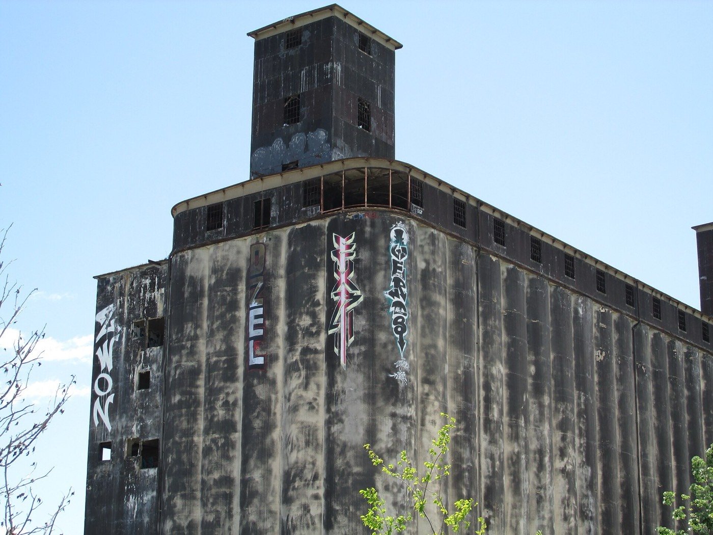

Film & Photo

The terminal’s scale and texture have made it a sought-after New York location. It has appeared in music videos for Lorde’s Team and David Bowie’s Valentine’s Day.
Tell us what the production needs (base camp, parking, power, water access or specific angles) and we’ll confirm what’s available for your dates.
- Feature film & television
- Commercials & branded content
- Music videos
- Editorial & fashion photography
- Documentary & stills
- Location scouts